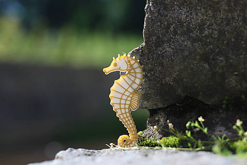
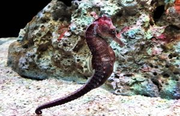

Koník morský (lat. Hippocampus guttulatus) je druh morskej ryby z čeľade ihlovitých, ktorá je známa svojím netypickým tvarom tela a hlavy, ktorá čiastočne pripomína hlavu koňa. Je to malá rybka o veľkosti okolo 15 cm, ktorá žije v oblasti severovýchodného Atlantického oceánu. Prebýva prevažne pri morskom dne, kde pomocou chápavého chvosta žije prichytená k riasam či rastlinám a papuľkou nasáva vodu, z ktorej filtruje potravu v podobe drobných kôrovcov a planktónu. Koník morský je malá ryba, s netypickým tvarom tela, jeho veľkosť sa obvykle pohybuje okolo 15 cm. Pozorujeme u neho pohlavný dimorfizmus – samec dosahuje maximálne 16 cm a samice až 18 cm. Súčasne sa líši aj vzhľadovo, samec má dlhší chvost a v prednej časti brucha brušný vak, v ktorom prechováva plod. Telo je esovito prehnuté v oblasti krku a začiatku chvosta pod telom. Na vrchu tela je umiestnená hlava, ktorá zdanlivo pripomína konskú hlavu. Z nej vystupuje značne pretiahnutý pysk, na ktorého konci sa nachádzajú drobné ústa. Za papuľou je umiestnená dvojica malých očí, ktoré sa môžu pohybovať do strán nezávisle od seba, čím zaisťujú širšie zorné pole. Povrch tela je pokrytý kostenými doštičkami, ktorých je zvyčajne 48 až 50. Na hlave a na chrbte sa nachádzajú drobné tvrdé výrastky. V chrbtovej plutve sa nachádza 18 až 21 plutvových lúčov, v ritnej plutve 4 až 5 a prsné plutvy sú vystužené 15 až 16 lúčmi. Telo má najčastejšie zelenú až hnedastú farbu, ktorá sa mení na hranici jednotlivých kostených štítkov, kde sa môžu objavovať malé biele bodky. Oproti iným druhom rýb má koníček chápavý chvost. Ten mu umožňuje prichytiť sa na rastlinu, či skalné podložie.
 